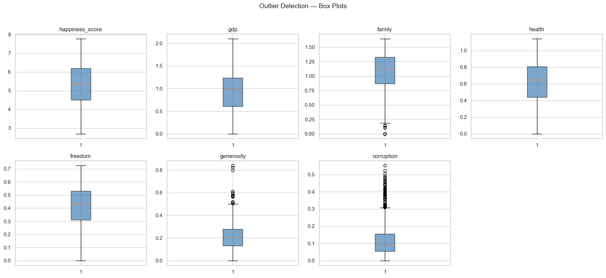
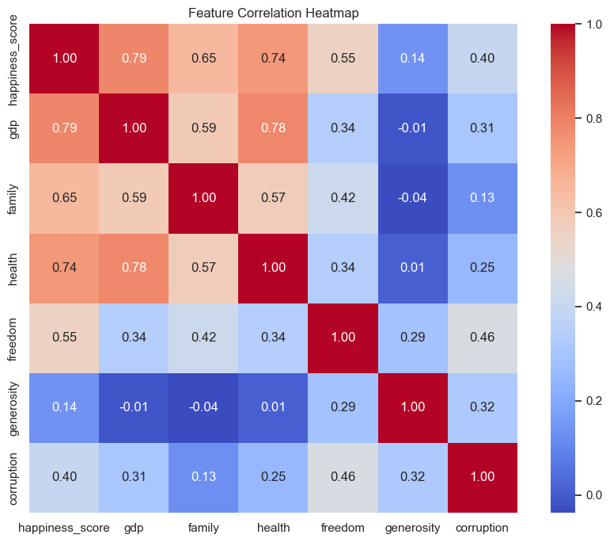

Step 1 — Exploratory Data Analysis (EDA) · Part A
2015
158 rows · 12 cols
Region ✓ · Std Error col
0 missing · 0 dupes
2016
157 rows · 13 cols
Region ✓ · CI cols added
0 missing · 0 dupes
2017
155 rows · 12 cols
No Region · dot notation
0 missing · 0 dupes
2018
156 rows · 9 cols
Renamed schema · minimal
1 missing · 0 dupes
2019
156 rows · 9 cols
Same schema as 2018
0 missing · 0 dupes
Missing Values & Duplicate Records
Row-level data quality check across all 5 source CSV files
| Year | Rows | Missing Values | Affected Column | Duplicates |
|---|
| 2015 | 158 | 0 | — | 0 |
| 2016 | 157 | 0 | — | 0 |
| 2017 | 155 | 0 | — | 0 |
| 2018 | 156 | 1 | Perceptions of corruption | 0 |
| 2019 | 156 | 0 | — | 0 |
| Total | 782 | 1 | → filled with year median | 0 |
Data Quality Observations
All issues identified during EDA that drove the cleaning and harmonization decisions
- ⚠️Inconsistent column names: 2017 uses dot-notation (
Happiness.Score, Economy..GDP.per.Capita.); 2018–2019 use plain text (Score, GDP per capita)
- ⚠️Inconsistent data types: Rank column is
int64 named differently across years (Happiness Rank vs Overall rank). All numeric features are float64 — consistent internally but mapped to different concepts.
- ⚠️Schema differences between years: Column count varies from 9 (2018–2019) to 13 (2016). Region only present in 2015–2016. Confidence intervals only in 2016, whisker values only in 2017.
- ⚠️Family vs Social support: Same concept, renamed — harmonized to
family
- ✅1 missing value in 2018
Perceptions of corruption — filled with year-level median
- ✅No duplicate records across any of the 5 source files
- 🗑️Columns dropped: Dystopia Residual, Standard Error, Confidence Intervals (Lower/Upper), Whisker High/Low — year-specific or non-predictive
Schema Differences Between Years
Per-year column names for each canonical field — the core harmonization challenge of this workshop
| Canonical Field | 2015 | 2016 | 2017 | 2018 | 2019 |
|---|
| country |
Country |
Country |
Country |
Country or region |
Country or region |
| happiness_score |
Happiness Score |
Happiness Score |
Happiness.Score |
Score |
Score |
| gdp |
Economy (GDP per Capita) |
Economy (GDP per Capita) |
Economy..GDP.per.Capita. |
GDP per capita |
GDP per capita |
| family |
Family |
Family |
Family |
Social support |
Social support |
| health |
Health (Life Expectancy) |
Health (Life Expectancy) |
Health..Life.Expectancy. |
Healthy life expectancy |
Healthy life expectancy |
| freedom |
Freedom |
Freedom |
Freedom |
Freedom to make life choices |
Freedom to make life choices |
| generosity |
Generosity |
Generosity |
Generosity |
Generosity |
Generosity |
| corruption |
Trust (Government Corruption) |
Trust (Government Corruption) |
Trust..Government.Corruption. |
Perceptions of corruption |
Perceptions of corruption |
| region |
Region |
Region |
ABSENT → 'Unknown' |
ABSENT → 'Unknown' |
ABSENT → 'Unknown' |
| DROPPED cols |
Standard Error |
CI Lower / Upper |
Whisker high/low |
— |
— |
| DROPPED (all years) |
Dystopia Residual — present in 2015–2017, non-predictive residual term |
green consistent name
amber different name, same concept
grey absent / filled
red dropped column
Potential Outliers — Box Plots
Box plots for all 7 features across the unified dataset (n=782). Outliers are most visible in generosity and corruption; GDP and health show mild high-end outliers.

Feature Correlation Heatmap
Pearson correlation across all numeric features. GDP (r≈0.78) and health (r≈0.75) are the strongest predictors of happiness score. Generosity and corruption are weakly correlated.

Unified Schema Proposal — Step 2 Output (Data Cleaning & Harmonization)
All 5 source files harmonized into one canonical schema. Amber = renamed, green = consistent across all years, strikethrough = dropped.
2015.csv
158 rows · 12 cols · has Region
Country
Happiness Score
Economy (GDP per Capita)
Family
Health (Life Expectancy)
Freedom
Generosity
Trust (Gov. Corruption)
Region
Happiness Rank
Standard Error
Dystopia Residual
2016.csv
157 rows · 13 cols · CI columns added
Country
Happiness Score
Economy (GDP per Capita)
Family
Health (Life Expectancy)
Freedom
Generosity
Trust (Gov. Corruption)
Region
Happiness Rank
Lower CI
Upper CI
Dystopia Residual
→
happiness_unified
782 rows · 10 canonical columns
country
string
id
year
int
id
happiness_score
float64
target
gdp
float64
feature
family
float64
feature
health
float64
feature
freedom
float64
feature
generosity
float64
feature
corruption
float64
feature
region
string
meta
←
2017.csv
155 rows · 12 cols · dot notation · no Region
Country
Happiness.Score
Economy..GDP.per.Capita.
Family
Health..Life.Expectancy.
Freedom
Generosity
Trust..Government.Corruption.
Happiness.Rank
Whisker.high
Whisker.low
Dystopia.Residual
2018.csv
156 rows · 9 cols · 1 missing value
Country or region
Score
GDP per capita
Social support
Healthy life expectancy
Freedom to make life choices
Generosity
Perceptions of corruption
Overall rank
2019.csv
156 rows · 9 cols · identical schema to 2018
Country or region
Score
GDP per capita
Social support
Healthy life expectancy
Freedom to make life choices
Generosity
Perceptions of corruption
Overall rank
col consistent name across all years
col renamed during harmonization
col column dropped
target
feature
identifier
metadata
Part B — Streaming ETL Dashboard · KPIs & Predictions
KPI 1 — Model Performance Overview
Avg Absolute Error
0.426
Mean |actual − predicted|
R² Score
0.764
76.4% variance explained
RMSE
0.547
Root mean squared error
Total Predictions
782
Records streamed via Kafka
Avg Signed Error
≈ 0.00
No systematic bias
Countries
170
Unique countries covered
Years Covered
2015–19
5 years of happiness data
Kafka Topic
happiness-predictions
Event-driven inference
KPI 2 — Predictions by Country
Top 20 Countries — Actual vs Predicted Happiness
Average happiness score across 2015–2019 for the 20 happiest countries
Event Processing Status
Processing outcome for all Kafka events received by the consumer
KPI 3 — Predicted vs Actual Score
Actual vs Predicted Happiness Score
Each point is one country-year event. Points on the diagonal = perfect prediction.
KPI 4 — Prediction Trends Over Time
Avg Actual vs Predicted Score by Year
How the model tracks real-world happiness trends across years
Avg Absolute Error by Year
Prediction error trend — lower is better
Bonus — Average Happiness by Region
Regional Happiness Overview
Average happiness score aggregated by world region (2015–2019)